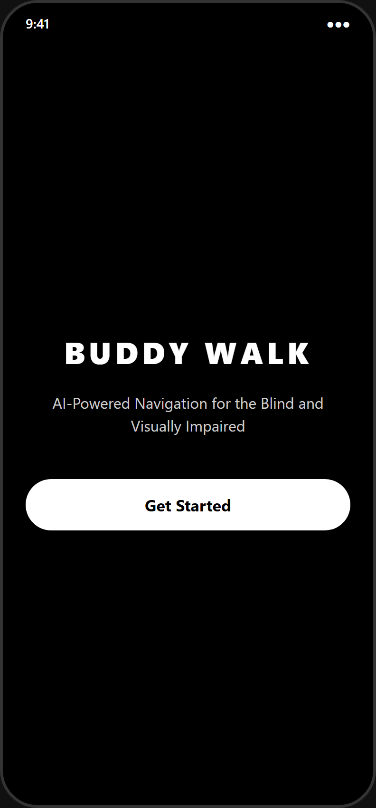
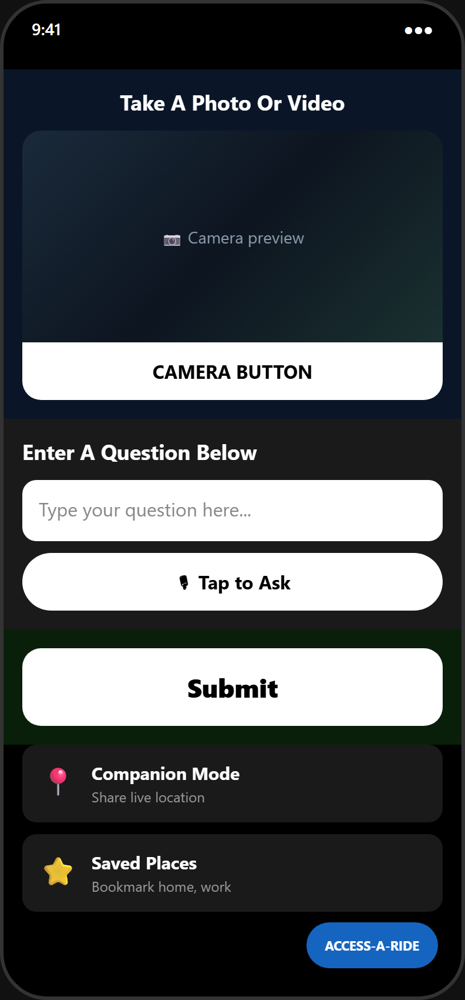
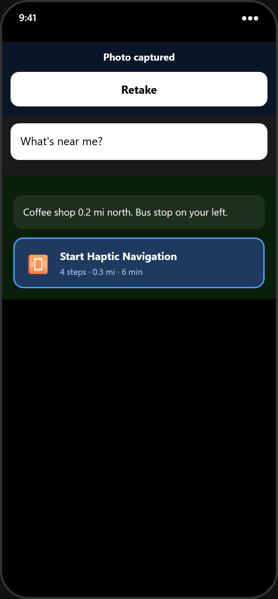
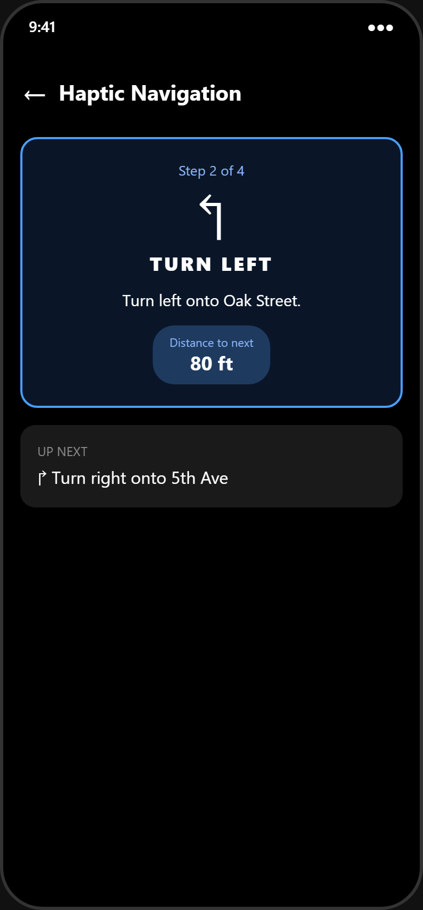
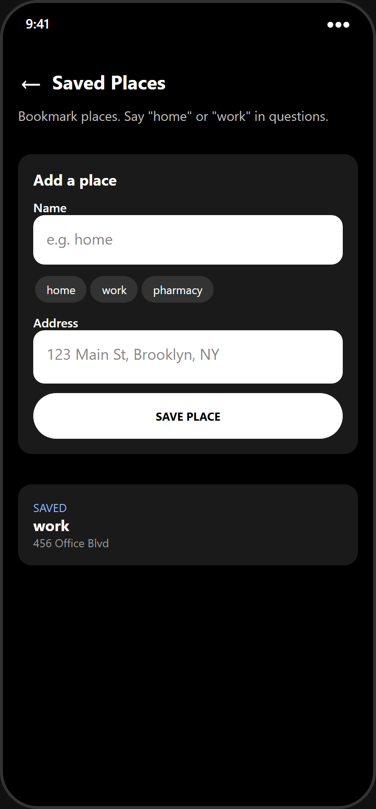
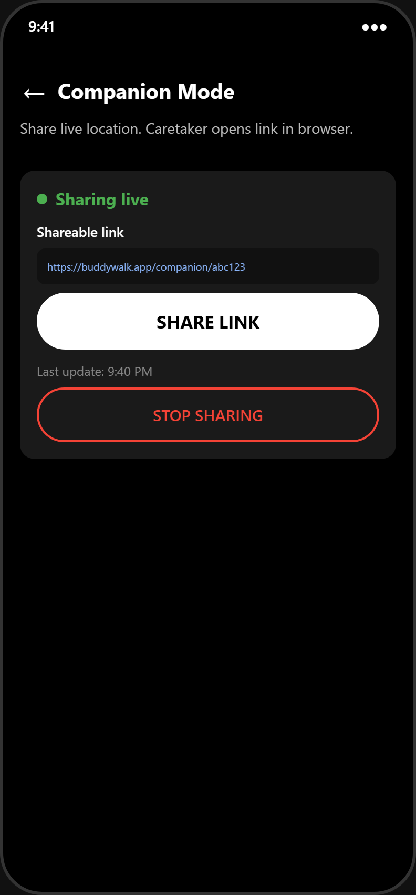
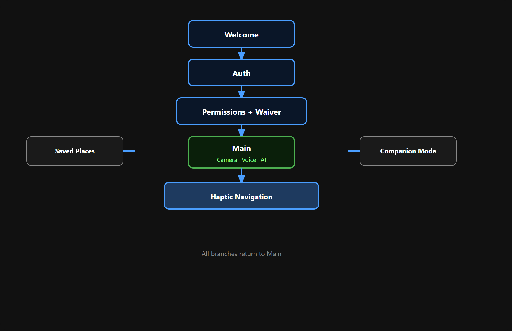

Native mobile app for blind and low-vision travelers — one place for camera Q&A, spoken directions, haptic turn-by-turn navigation, and live location sharing.
Dark, high-contrast UI built for screen readers, voice input, and hands-free feedback.






Onboarding through Firebase auth and permissions, then the main hub branches to navigation, bookmarks, or companion sharing.

Photo or video plus voice or text. Answers use your GPS, heading, and image context.
Walking directions parsed into steps with distinct vibration patterns per turn.
Bookmark nicknames like “home” or “work” for shorter voice questions.
Share a link so a trusted contact can follow live location in the browser.
Screen-reader labels, spoken feedback, shake-to-mic, offline warnings, Access-A-Ride dial.
19 unit tests for routing, haptics, and navigation math — run with npm test in mobile/.
Backend on your machine · Expo Go on a phone (same Wi‑Fi)
cd mobile && npm install && npx expo start